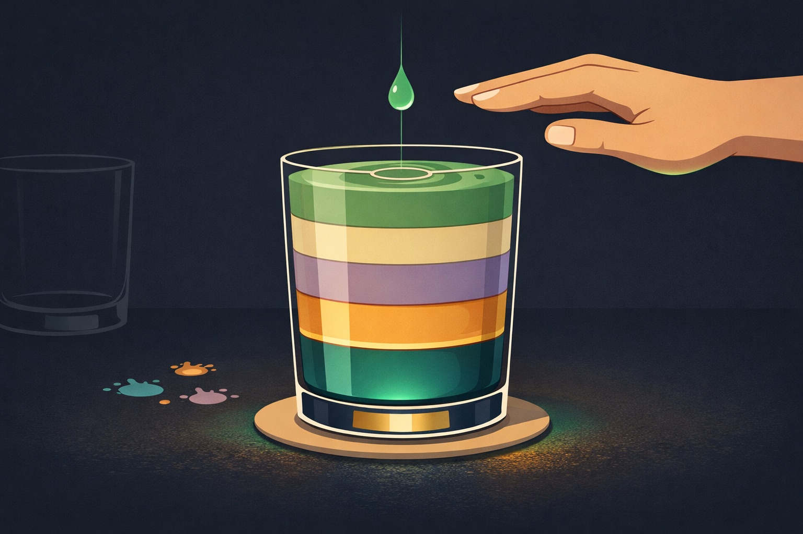

By Rustam Iuldashov
30 years lived experience with chronic migraine | Sources: 24 peer-reviewed references including Neurology (prospective diary, n=17), Frontiers in Psychology (meta-synthesis, 16 studies), OVERCOME US (n=59,001), Medicina (meta-analysis, 11 RCTs) | Last updated: March 22, 2026
Medical Review: This content is based on peer-reviewed research from The Journal of Headache and Pain, Neurology, Headache, Frontiers in Psychology, Annual Review of Psychology, Clinical Psychology: Science and Practice, Medicina, European Journal of Pain, International Journal of Behavioral Medicine, American Psychologist, Computers in Human Behavior, and Addictive Behaviors.
Important Notice: This article is for informational purposes only and does not replace professional medical advice. The author is not a licensed physician or healthcare professional. If you are experiencing persistent emotional distress or symptoms of depression or anxiety, please consult a qualified mental health professional.
Key Takeaways
- Stress triggers up to 80% of migraine attacks — and stress relief can trigger them too. Your brain biologically needs steady boundaries, not heroic overcommitment followed by collapse.[1][2]
- Guilt about saying no is amplified by migraine stigma. Nearly a third of people with migraine face frequent stigma, which harms quality of life independently of headache frequency.[9]
- Specific scripts outperform willpower. Name your health, offer alternatives, reframe early exits as preserving — not abandoning — the experience. For your inner circle: reframe quiet time as protecting shared time together.[14][15][16]
- Self-compassion is evidence-based medicine. Research links it to reduced stress, lower pain interference, and decreased medication use in chronic pain.[12][13]
- Embrace JOMO. Every deliberate “no” is a “yes” to tomorrow without pain. This isn’t resignation — it’s an investment.
- Boundaries protect relationships. Honest limits create space for genuine connection; resentful compliance erodes it.[18][19]
- CBT and ACT equip you to hold guilt without obeying it. Challenge distorted thinking with facts: your brain is different, your needs are valid, and one honest “no” builds more trust than a hundred resentful yeses.[20][22][23]
The text arrives on a Wednesday. Your friend’s birthday — Saturday, 8 PM, a loud Italian place downtown. You already know how this ends. Flickering overhead lights. Conversations ricocheting off tile walls. Wine someone will push into your hand. And around 10 PM, the slow tightening behind your right eye — the signal that Sunday is already gone.
You RSVP “yes” anyway. Because saying no feels worse than the migraine.
If this sounds like your life, the science agrees with your instincts: up to 80% of people with migraine identify stress as their most common trigger.[1] But here’s what makes boundaries uniquely treacherous for migraine brains. It’s not just overcommitting that fires up an attack. It’s the relief afterward. Scientists call it the “let-down headache.” Your brain can punish you for saying yes and for finally unwinding.[2]
You are biologically wired to need boundaries more than almost anyone — and psychologically conditioned to feel terrible about setting them.
This article is about breaking that cycle. With practical scripts from the world’s leading psychologists, and science that proves guilt is a liar, not a guide.
The Migraine Boundary Paradox
Your brain doesn’t just process stress differently. It lives differently.
Between attacks, the migraine brain sits in a state of heightened electrical excitability — what neurologists call the hyperexcitable interictal state.[3] Picture a smoke detector calibrated to maximum sensitivity. Normal inputs — a coworker’s perfume, overlapping voices, a sudden change in plans — register as threats where a non-migraine brain barely notices.
The stress-processing system, the hypothalamic-pituitary-adrenal (HPA) axis, fires more readily, more intensely.[4] Every time you push through discomfort to attend an event, take on extra work, or absorb someone else’s emotional emergency, you’re piling weight onto an already overloaded system. Neuroscientist Nouchine Maleki calls this “allostatic load” — the cumulative wear on a brain that never fully resets.[3] Think of it as a glass that fills drop by drop with every obligation, every overstimulating environment, every swallowed “I’m fine.” When it overflows, you don’t get a warning. You get an attack. And allostatic load doesn’t just make individual episodes more likely. It contributes to the transformation from episodic migraine to chronic migraine.[5] The occasional becomes the permanent.

Now the twist. A landmark 2014 study in Neurology tracked migraine patients through 2,011 diary entries and found that a drop in perceived stress from one day to the next was linked to migraine onset the following day. During the first six hours after stress declined, the risk of an attack was nearly five times higher.[2]
That Friday evening when you finally collapse on the couch after saying “yes” to everything all week? Prime migraine territory.
Neurologist Peter Goadsby summarizes it with clinical precision: the migraine brain thrives on stability and is vulnerable to change.[6] Boundaries aren’t a lifestyle preference for you. They’re neurological self-preservation.
Why “No” Feels Like Betrayal
If boundaries are medically necessary, why does every one feel like a small act of treason?
Clinical psychologist Harriet Braiker gave this pattern a name: the “disease to please” — a deeply ingrained belief that your worth depends on meeting others’ needs.[7] For people with chronic illness, the pattern runs deeper still. You already feel like a burden. You already cancel plans, miss birthdays, disappoint people you love. Saying no proactively — before pain forces your hand — feels like volunteering to become the person you fear others already see.
⚠️ When to Seek Help
Emotional distress related to chronic illness is real and valid. But if you feel persistently hopeless, experience thoughts of self-harm, or find that guilt and isolation have become so overwhelming that you cannot function — this goes beyond boundary-setting. Please reach out to a mental health professional or contact your local crisis helpline. You do not have to manage this alone.
The research confirms this isn’t paranoia. A 2023 meta-synthesis of qualitative migraine studies in Frontiers in Psychology found guilt to be one of the most pervasive emotional burdens reported by people with migraine. Participants described feeling responsible for their own illness, ashamed of missed family duties, and progressively isolated.[8]
The numbers are equally stark. The OVERCOME (US) study — the largest population-based examination of migraine stigma ever conducted, with nearly 59,000 participants — found that 31.7% of people with migraine experience stigma often or very often. The finding that stopped researchers: stigma was associated with worse disability and lower quality of life regardless of headache frequency.[9] How others respond to your migraine can matter as much as how many migraine days you endure.
This is the emotional landscape where boundaries must be built. And it’s exactly why generic advice — “just learn to say no!” — collapses on contact with reality. You need strategies designed for the specific psychological architecture of chronic illness. Not willpower. Tools.
The FOMO-to-Flare Pipeline
There’s a modern name for the anxiety that drives overcommitment: FOMO — Fear of Missing Out. Researchers have studied it mostly in the context of social media scrolling. But the psychological machinery applies directly to chronic illness, and the stakes are higher than a missed Instagram post.
FOMO is rooted in unmet relatedness needs — the fundamental human hunger to belong.[10] When migraine already isolates you, when you’ve already missed enough dinners and deadlines and birthday parties, the fear of missing one more can override every rational calculation about consequences. You say yes not because you want to go. You say yes because you’re terrified of disappearing.
The cascade is predictable. FOMO triggers upward social comparison — you measure your constrained life against others’ seemingly effortless social calendars and find yourself lacking.[11] For someone with migraine, this comparison has a physical dimension no study captures: you watch friends attend back-to-back events while you calculate whether you can survive one.
Dr. Kristin Neff’s research at the University of Texas at Austin offers a way to interrupt this spiral. Her work has demonstrated that self-compassion — treating yourself with the kindness you’d offer a struggling friend — reduces stress, lowers anxiety, and strengthens resilience in people with chronic pain.[12] A study of her Mindful Self-Compassion program found significant decreases in pain interference and pain medication use.[13]
Self-compassion doesn’t mean surrender. It means recognizing something simple and hard: protecting your health is not the same as letting people down.
Every “no” to the dinner is a “yes” to tomorrow morning without pain. Psychologists call this JOMO — the Joy of Missing Out. It’s not resignation. It’s an investment. When you choose rest deliberately, not as a last resort after collapse, you’re not missing the party. You’re funding your ability to show up at the next one.
What to Actually Say: Scripts That Work
The world’s leading boundary experts converge on one principle: boundaries require specific words, not vague good intentions. Here are scripts adapted from licensed therapist Nedra Glover Tawwab (Set Boundaries, Find Peace)[14], clinical psychologist Henry Cloud (Boundaries)[15], and assertiveness pioneer Manuel J. Smith (When I Say No, I Feel Guilty).[16]
The Pre-Emptive No
“I’d love to be there, but that evening won’t work for my health. Could we do a quieter catch-up this weekend instead?”
Three things happen in one sentence: genuine warmth, health named without oversharing, and an alternative offered. As Tawwab writes, boundaries aren’t walls — they’re bridges with gates.[14]
The Mid-Event Exit
“I’m so glad I came. I need to head out now while I’m still feeling good — I want my memory of tonight to be this moment, not what happens if I stay.”
This reframes leaving as preserving the experience. Not abandoning it.
The Workplace Limit
“I want to do this well, and I know my capacity right now. Can we adjust the timeline, or could I take on one part of it?”
Research on assertiveness training in chronic pain populations consistently shows that specific, non-apologetic communication reduces emotional stress and improves outcomes.[17] Vague hedging (“I’ll try...”) leaves you exposed. Clear language protects you.
The Inner Circle Script
“I really want to spend this evening with you, so I’m going to take an hour of quiet right now. This is how I protect our time together tomorrow morning.”
This script is different from the others because it doesn’t say no to the person. It says no to the timeline. The message to your partner, your child, your parent: I am not withdrawing from you. I am preserving myself for you.
The Guilt-Interrupt
When guilt starts its monologue, try the self-compassion pause developed by Neff and Germer[12]: First, acknowledge the suffering — “This is hard.” Then, recognize common humanity — “Other people with chronic illness face this exact dilemma.” Finally, offer yourself kindness — “I am doing the best I can with the body I have.”
Three sentences. Practice them until they become reflex.
The Preservation Paradox: How Boundaries Save Relationships
Here’s the truth nobody tells you: well-set boundaries don’t destroy relationships. They rescue them.
Psychologist Annmarie Caño’s research found that when partners minimize or catastrophize chronic pain, the person in pain does worse. But emotional validation — genuinely acknowledging what the other person is going through — improves mood regulation and even alters pain perception itself.[18] Boundaries create conditions for that validation by replacing resentful compliance with honest conversation.
Consider what happens when you say yes against your instincts. You attend the dinner, white-knuckling through sensory overload, and either leave early in visible distress — generating guilt for your host — or push through and spend the next two days in bed — generating resentment in yourself. Neither outcome serves the relationship. Both corrode it.
When you say no proactively and offer an alternative, you communicate something your loved ones may not expect: “I value this relationship enough to protect my ability to show up fully.”
As Brené Brown writes, clear is kind. Vague is unkind. The paradox of boundaries is counterintuitive and consistent: limits create more connection. Not less.
Your Boundary Toolkit: What the Evidence Says
Cognitive Behavioral Therapy (CBT) has the strongest evidence base for reducing migraine frequency and disability through behavioral change. A 2022 meta-analysis of 11 RCTs confirmed that CBT significantly reduced headache frequency and MIDAS disability scores.[20] A 2025 systematic review of 50 trials with over 6,000 participants found that CBT, relaxation training, and mindfulness-based therapies each reduce migraine attack frequency in adults.[21]
What makes CBT particularly relevant for boundary-setting is its focus on identifying the thoughts that trap you. Common cognitive distortions in migraine — and the reality that challenges them:
Distortion: “If I say no, they’ll never invite me again.”
Reality: One honest “no” with a warm alternative strengthens trust. Resentful attendance with a pain-stricken face does not.
Distortion: “They think I’m faking it.”
Reality: 31.7% of migraine patients face this stigma[9] — it’s a societal failure of understanding, not evidence that you’re unconvincing.
Distortion: “I should be able to handle this like everyone else.”
Reality: Your brain processes stimuli differently at a neurological level.[3] Comparing your capacity to someone without a hyperexcitable nervous system is comparing apples to alarm systems.
Acceptance and Commitment Therapy (ACT) adds a complementary dimension. Rather than fighting guilt until it disappears — which rarely works — ACT teaches you to hold discomfort lightly while acting on your values.[22] You can feel guilty and say no. The guilt doesn’t get the final vote. A 2021 RCT of internet-delivered ACT for chronic pain found significant improvements in pain acceptance and reductions in pain interference, with benefits maintained at one-year follow-up.[23] These are skills you can build from your living room.
The Consistency Principle
Remember the let-down headache? The migraine brain punishes variability. Wild swings between “yes to everything” weeks and “collapsed in bed” weekends create exactly the stress-relief oscillation that fires attacks.[2]
Consistent boundaries smooth this curve. A predictable rhythm — a known bedtime, manageable social commitments, regular and unapologetic “no” patterns — reduces the cortisol rollercoaster that destabilizes your nervous system.
Mindfulness-Based Cognitive Therapy (MBCT), specifically adapted for migraine, demonstrated this principle in a randomized controlled trial: participants experienced significant reduction in headache frequency and improved psychological functioning compared to a waitlist control, with effects sustained at seven months.[24] The mindfulness component helps you notice the early signals — the tightening jaw, the rising sense of obligation, the familiar urge to type “sure, I’ll be there!” — before they become commitments your body can’t honor.
A boundary set on Tuesday is worth more than a cancellation sent on Saturday.
⚕️ Important Medical Disclaimer
This article is for informational and educational purposes only and does not constitute medical advice, diagnosis, or treatment. The author, Rustam Iuldashov, is not a licensed physician, neurologist, or healthcare professional. He is a patient advocate with 30 years of personal experience living with chronic migraine.
All clinical claims in this article are sourced from peer-reviewed research published in indexed medical journals. Study designs and sample sizes are noted where applicable.
If you are struggling with persistent guilt, emotional distress, or isolation related to migraine, please consult a qualified mental health professional. Boundary-setting strategies described in this article are educational — they are not a substitute for therapy, particularly if you are experiencing symptoms of depression or anxiety.
Always consult a qualified healthcare provider for questions about your individual health, migraine treatment, or medication decisions. This content was last reviewed for accuracy on March 22, 2026.
References
- Stubberud A, Buse DC, Kristoffersen ES, et al. “Is there a causal relationship between stress and migraine? Current evidence and implications for management.” The Journal of Headache and Pain, 22:155 (2021). doi:10.1186/s10194-021-01369-6. Study design: Narrative review.
- Lipton RB, Buse DC, Hall CB, et al. “Reduction in perceived stress as a migraine trigger: Testing the ‘let-down headache’ hypothesis.” Neurology, 82(16):1395–1401 (2014). doi:10.1212/WNL.0000000000000332. Study design: Prospective diary study. n=17 (2,011 diary entries).
- Maleki N, Becerra L, Borsook D. “Migraine: Maladaptive brain responses to stress.” Headache, 52(Suppl 2):102–106 (2012). doi:10.1111/j.1526-4610.2012.02241.x. Study design: Review.
- Kim YS, et al. “Stress-triggered pathway behind migraines.” The Journal of Headache and Pain (2024). doi:10.1186/s10194-024-01904-5. Study design: Experimental (animal model).
- Stubberud A, et al. (same as [1]) — evidence that major stressful life events precede transformation from episodic to chronic migraine.
- Goadsby PJ. Cited in American Migraine Foundation, “Stress and Migraine” resource (2022). Expert clinical opinion.
- Braiker HB. The Disease to Please: Curing the People-Pleasing Syndrome. McGraw-Hill, 2001. ISBN: 978-0071385640.
- Leonardi M, Martelletti P, Burrone A, et al. “Living with migraine: A meta-synthesis of qualitative studies.” Frontiers in Psychology, 14:1129926 (2023). doi:10.3389/fpsyg.2023.1129926. Study design: Meta-synthesis. 16 qualitative studies included.
- Buse DC, Seng EK, Engstrom EP, et al. “Migraine-Related Stigma and Its Relationship to Disability, Interictal Burden, and Quality of Life: Results of the OVERCOME (US) Study.” Neurology, 102(4):e208074 (2024). doi:10.1212/WNL.0000000000208074. Study design: Population-based cross-sectional. n=59,001.
- Przybylski AK, Murayama K, DeHaan CR, Gladwell V. “Motivational, emotional, and behavioral correlates of fear of missing out.” Computers in Human Behavior, 29(4):1841–1848 (2013). doi:10.1016/j.chb.2013.02.014. Study design: Cross-sectional surveys. n=2,079.
- Servidio R, Griffiths MD, Demetrovics Z. “Fear of missing out and problematic social media use: A serial mediation model of social comparison and self-esteem.” Addictive Behaviors, 151:107950 (2024). doi:10.1016/j.addbeh.2024.107950. Study design: Cross-sectional mediation. n=537.
- Neff KD. “Self-Compassion: Theory, Method, Research, and Intervention.” Annual Review of Psychology, 74:193–218 (2023). doi:10.1146/annurev-psych-032420-031047. Study design: Comprehensive review.
- Serpa JG, et al. “Mindful Self-Compassion (MSC) for veterans.” Reported in Neff (2023). Study design: RCT. Found significant decreases in pain interference and pain medication use.
- Tawwab NG. Set Boundaries, Find Peace: A Guide to Reclaiming Yourself. TarcherPerigee/Penguin, 2021. ISBN: 978-0593192092.
- Cloud H, Townsend J. Boundaries: When to Say Yes, How to Say No to Take Control of Your Life. Zondervan, 1992. ISBN: 978-0310247456.
- Smith MJ. When I Say No, I Feel Guilty. Bantam Books, 1975. ISBN: 978-0553263909.
- Speed BC, Goldstein BL, Goldfried MR. “Assertiveness Training: A Forgotten Evidence-Based Treatment.” Clinical Psychology: Science and Practice, 25(1):e12216 (2018). doi:10.1111/cpsp.12216. Study design: Review.
- Caño A, et al. Research on emotional validation and chronic pain outcomes. Journal of Pain, 18(8) (2017). Study design: Couples intervention research.
- Brown B. Dare to Lead. Random House, 2018. ISBN: 978-0399592522.
- Bae JY, Sung HK, Kwon NY, et al. “Cognitive Behavioral Therapy for Migraine Headache: A Systematic Review and Meta-Analysis.” Medicina, 58(1):44 (2022). doi:10.3390/medicina58010044. Study design: Systematic review/meta-analysis. 11 RCTs. n=621.
- Burch RC, et al. “Behavioral interventions for migraine prevention: A systematic review and meta-analysis.” (2025). Study design: Systematic review/meta-analysis. 50 RCTs. n=6,024.
- McCracken LM, Vowles KE. “Acceptance and Commitment Therapy and Mindfulness for Chronic Pain.” American Psychologist, 69(2):178–187 (2014). doi:10.1037/a0035623. Study design: Review.
- Rickardsson J, et al. “Internet-delivered acceptance and commitment therapy as microlearning for chronic pain: A randomized controlled trial with 1-year follow-up.” European Journal of Pain, 25(5):1012–1030 (2021). doi:10.1002/ejp.1723. Study design: RCT. n=113.
- Simshäuser K, Pohl R, Behrens P, et al. “Mindfulness-Based Cognitive Therapy as Migraine Intervention: A Randomized Waitlist Controlled Trial.” International Journal of Behavioral Medicine, 29:597–609 (2022). doi:10.1007/s12529-021-10044-8. Study design: RCT. n=54.

How We Create Content
- Peer-reviewed sources only. This article cites The Journal of Headache and Pain, Neurology, Headache, Frontiers in Psychology, Annual Review of Psychology, Clinical Psychology: Science and Practice, Medicina, European Journal of Pain, International Journal of Behavioral Medicine, American Psychologist, Computers in Human Behavior, and Addictive Behaviors.
- Study transparency. Study design and sample sizes noted for all clinical references.
- Source verification. All claims backed by numbered references with DOI links.
- Experience + Science. 30 years personal migraine experience combined with peer-reviewed evidence.
- Regular updates. Articles reviewed when significant new research emerges.
- No conflicts of interest. No funding from pharmaceutical, supplement, or therapy platform companies.
Your Boundaries Deserve Data, Not Just Intentions
Migraine Companion helps you track stress levels, social commitments, and attacks side by side — so you can see which boundaries protect you and which compromises cost you. Turn patterns into proof.
Last reviewed: March 2026
Next scheduled review: September 2026